Batch 02 · recovered from F:\repotest2
The second
drawer.
Bows, crossbows, four generations of the Eiffel Tower, a pelican on a bicycle, an unlabelled controller study and a hidden 747. Pulled from a 1.26 GB working folder; the models and their source are intact, the bulk reference library is not.
Left behind: node_modules/ and every research/ tree — the bulk of the 1.26 GB was PDFs, scans and third-party reference repos. The model pages, src/, tools/, vendor/, previews and render outputs were copied as found.
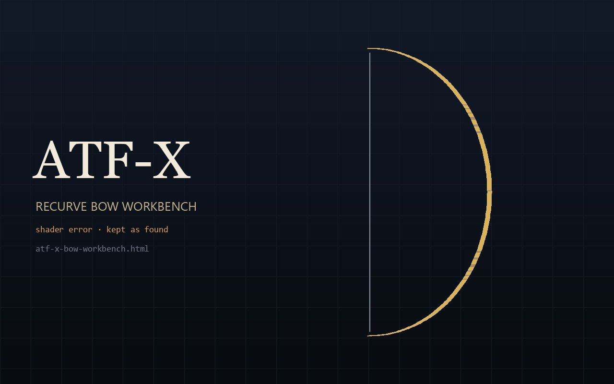
shader error · as foundATF-X Bow Workbench
FIVICS ATF-X recurve bow, every part exposed — the shader fails in this browser, kept anyway.
atf-x-bow-workbench.html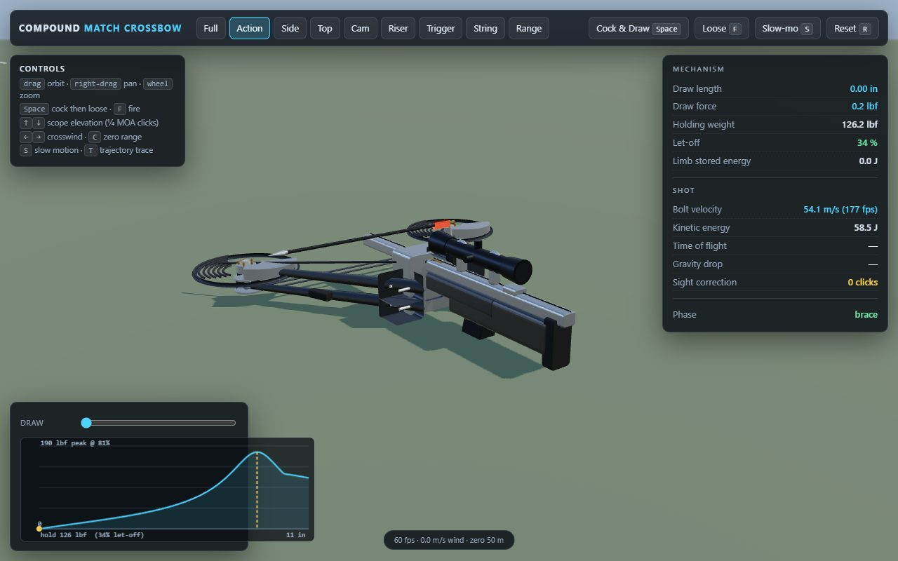
crossbow · standaloneCompound Crossbow
Mechanism and ballistics in a single self-contained page.
crossbow.standalone.html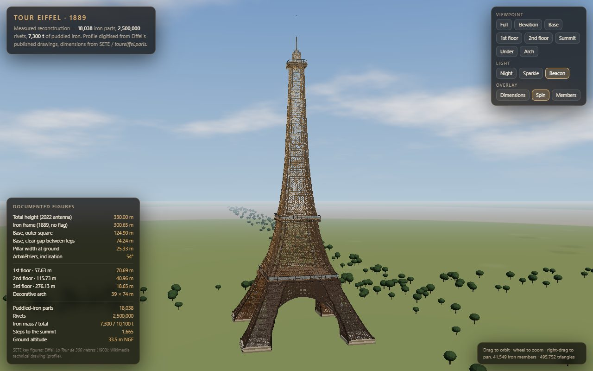
Eiffel · measuredEiffel — Measured
The profile digitised from the 1900 elevation; 72 names, 20,000 bulbs.
eiffel-tower.html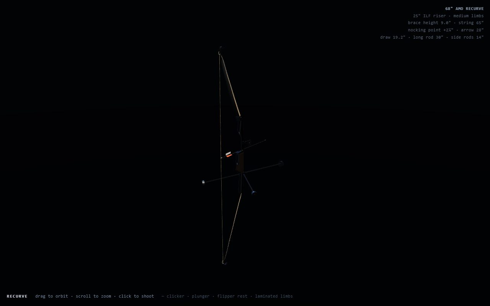
bow · OlympicOlympic Recurve
Competition recurve with sight, long rod and clicker.
olympic-recurve.htmlPelican on a Bicycle
A pelican riding a bicycle. No further notes were provided.
pelican-bicycle.html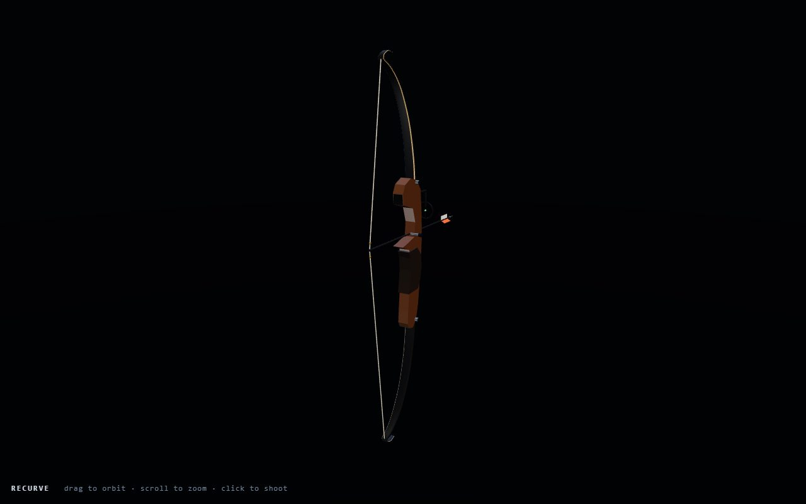
bow · recurveRecurve Bow
The recurve geometry and limb profiles, stripped to the archery rig.
recurve-bow.html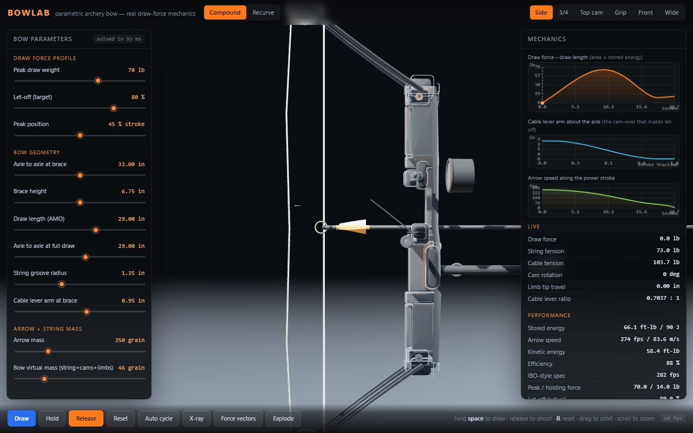
bow · mechanicsBow Lab
Compound and recurve mechanics with live force curves and cam geometry.
bowlab/index.html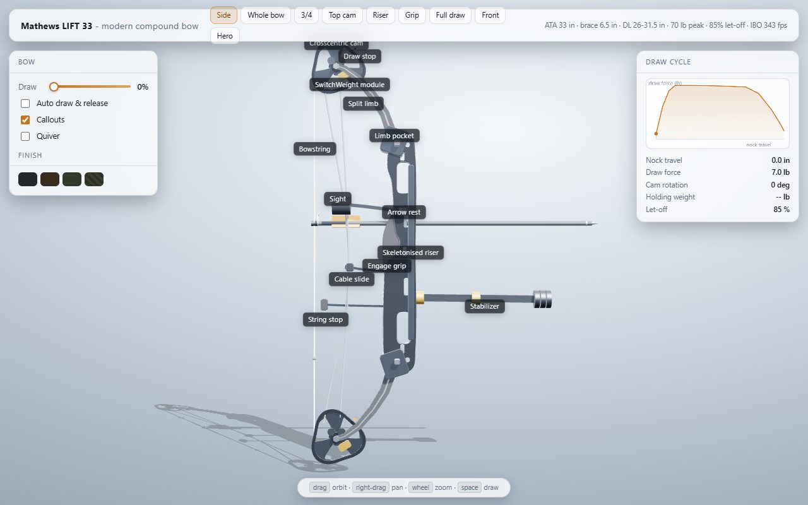
bow · compoundCompound Bow — Mathews
A Mathews LIFT 33 build with cams, cables and draw profile.
mathews-standalone.html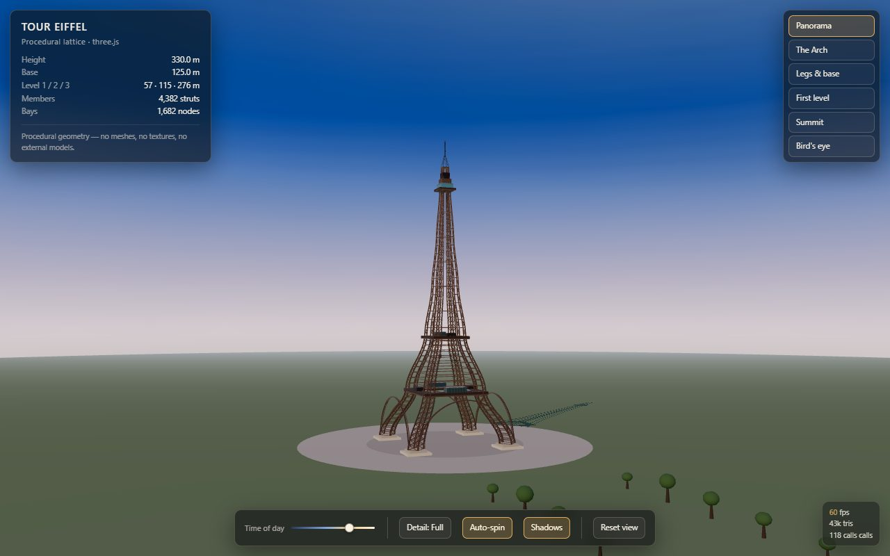
Eiffel · 3jsEiffel — Procedural
The first procedural pass: tower, plaza and a low-poly Paris.
eiffel-tower-3js/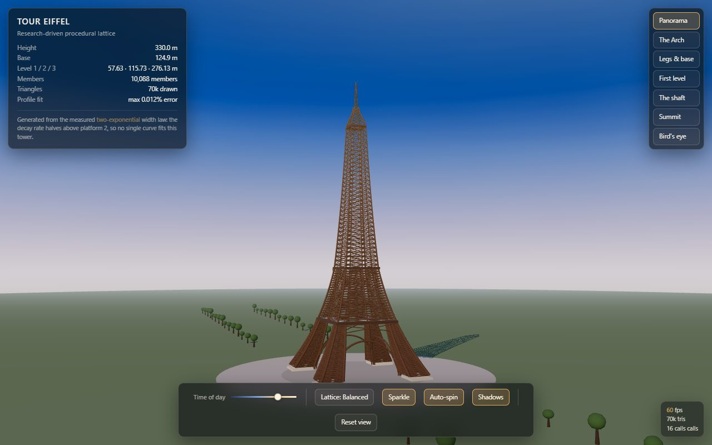
Eiffel · v2Eiffel — Research Build
Version two: a research-driven rebuild with a denser profile and world.
eiffel-tower-v2/Eiffel — Stage 3
The structural stage: visible members, measurements and a colder night view.
model-detailed.html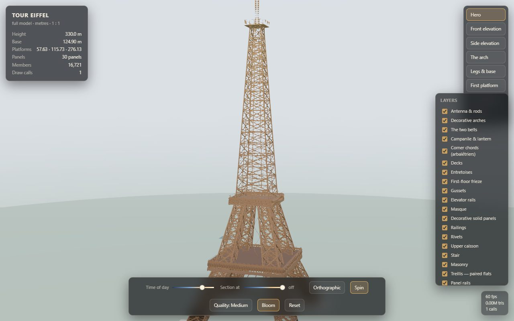
Eiffel · stage 4Eiffel — Stage 4
The fourth stage, with the findings and member-level structure kept alongside.
model-detailed.htmlSecret Model 1
A controller study with no web page: .blend builds, refs and renders.
secretmodel1/renders/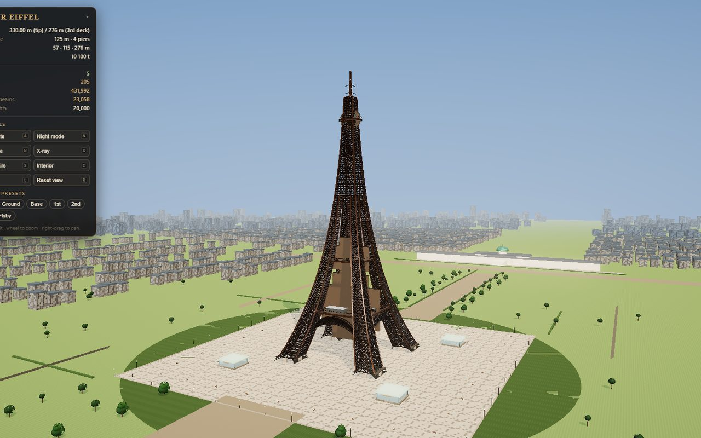
hidden · 747747-400 — Hidden
The do_not_look folder: a full 747 study with verification shots.
do_not_look/index.html